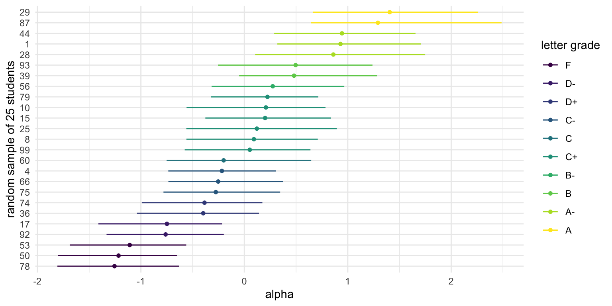
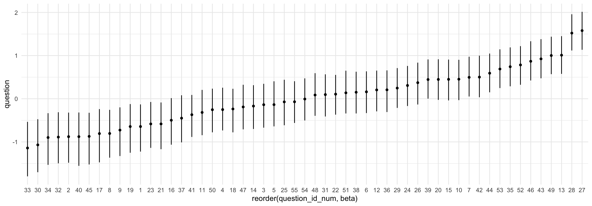
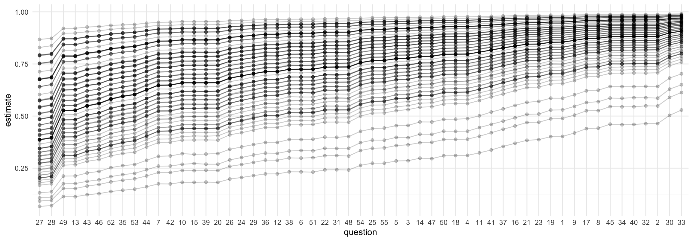
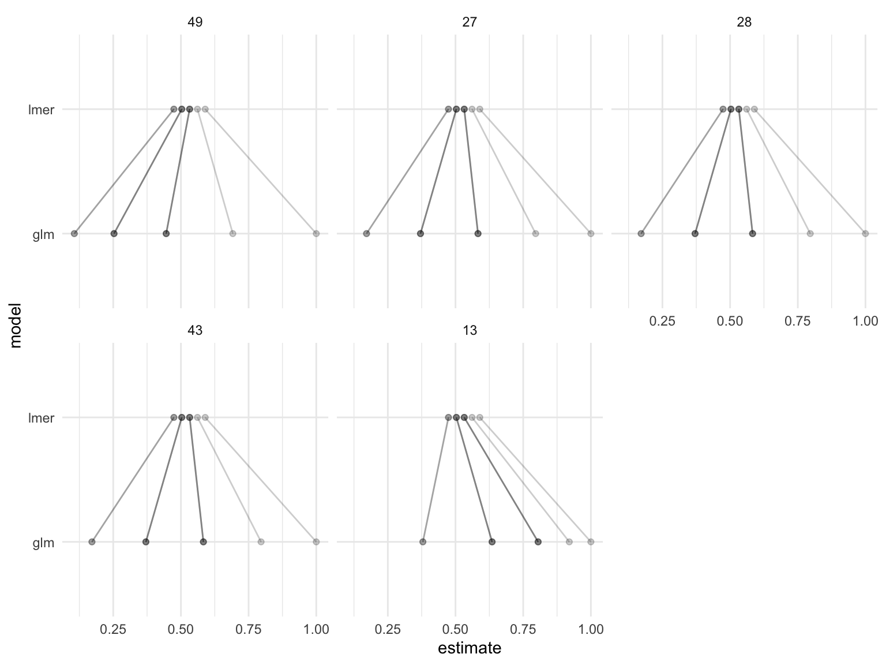

IRT Models
Opening Comments
- Exam
- Workshop
- Paper
Here are the packages we’re using:
This week, I introduce the idea of a IRT model.
This is just one specific type of hierarchical model.
The answers dataset has answers from hypothetical students to real questions from a recent exam.
question_id_numindexes the 55 questions on the exam.student_id_numidexes the 100 students who took the exam.correct_answerindicates (0/1) where the student answered the question correctly.
Rows: 5,500
Columns: 3
$ student_id_num <dbl> 1, 1, 1, 1, 1, 1, 1, 1, 1, 1, 1, 1, 1, 1, 1, 1, 1, 1, 1, 1, 1, 1…
$ question_id_num <dbl> 1, 2, 3, 4, 5, 6, 7, 8, 9, 10, 11, 12, 13, 14, 15, 16, 17, 18, 1…
$ correct_answer <dbl> 1, 1, 1, 1, 1, 1, 1, 1, 1, 1, 1, 1, 1, 1, 0, 1, 1, 1, 1, 1, 1, 1…grades <- answers %>%
group_by(student_id_num) %>%
summarize(proportion_correct = mean(correct_answer)) %>%
mutate(
letter_grade = cut(
proportion_correct,
breaks = c(-Inf, 0.60, 0.63, 0.67, 0.70, 0.73, 0.77, 0.80, 0.83, 0.87, 0.90, 0.93, Inf),
labels = c("F", "D-", "D", "D+", "C-", "C", "C+", "B-", "B", "B+", "A-", "A"),
ordered_result = TRUE
)
)
grades |> filter(student_id_num <= 10)# A tibble: 10 × 3
student_id_num proportion_correct letter_grade
<dbl> <dbl> <ord>
1 1 0.909 A-
2 2 0.527 F
3 3 0.764 C
4 4 0.727 C-
5 5 0.964 A
6 6 0.818 B-
7 7 0.818 B-
8 8 0.782 C+
9 9 0.564 F
10 10 0.8 C+ Rasch / 1-PL model
Indices
- Answers: \(n = 1, \dots, N\). (\(N = 55 \times 100 = 5{,}500\) in our data.)
- Students: \(j = 1, \dots, J\). (\(J = 100\) in our data.)
- Questions: \(k = 1, \dots, K\). (\(K = 55\) in our data.)
Outcome: \(y_{n} \in \{0, 1\}\) indicates whether the \(n\)th answer is correct.
\[ y_n \sim \mathrm{Bernoulli}(\pi_n) \\ \pi_n = \text{logit}^{-1} \left( \mu + \alpha_{j[n]} - \beta_{k[n]} \right). \]
Parameters
- \(\pi_n\): the probability that answer \(n\) is correct
- \(\alpha_{j[n]}\): the ability of student \(j\) [who is giving the \(n\)th answer].
- Higher \(\alpha_j\) ⇒ more likely to answer correctly; more knowledgeable student.
- \(\beta_{k[n]}\): the difficulty of question \(k\) [which is associated with the \(n\)th answer].
- Higher \(\beta_k\) ⇒ less likely to answer correctly; harder item.
- \(\mu\): average difficulty across questions
Hierarchical Model
\[ \alpha_j \sim N(0,\sigma_\alpha^2)\\ \beta_k \sim N(0,\sigma_\beta^2) \]
Priors
\[ \sigma_\alpha \sim \mathrm{half\text{-}Cauchy}(0,1)\\ \sigma_\beta \sim \mathrm{half\text{-}Cauchy}(0,1) \]
\[ \mu \sim \mathrm{Cauchy}(0,1). \]
data {
int<lower=1> N; // number of answers
int<lower=1> J; // number of students
int<lower=1> K; // number of questions
int<lower=1, upper=J> jj[N]; // student index for answer n
int<lower=1, upper=K> kk[N]; // question index for answer n
int<lower=0, upper=1> y[N]; // answer n is correct (0/1)
}
parameters {
real mu; // mean difficulty
vector[J] alpha; // abilities; one per student
vector[K] beta; // difficulties; one per question
real<lower=0> sigma_beta; // SD of difficulties
real<lower=0> sigma_alpha; // SD of abilities
}
model {
sigma_beta ~ cauchy(0, 1); // prior for SD of difficulties
sigma_alpha ~ cauchy(0, 1); // prior for SD of abilities
mu ~ cauchy(0, 1); // prior for mean difficulty
alpha ~ normal(0, sigma_alpha); // abilities
beta ~ normal(0, sigma_beta); // difficulties
for (n in 1:N) {
y[n] ~ bernoulli_logit(mu + alpha[jj[n]] - beta[kk[n]]); // likelihood
}
}# make data for stan
data_list <- list(
# upper bounds of indices
N = nrow(answers), # - n in {1,...,N} indexes answers
J = max(answers$student_id_num), # - j in {1,...,J} indexes students
K = max(answers$question_id_num), # - k in {1,...,K} indexes questions
# indices for each respondent
jj = answers$student_id_num, # jj is a vector of student indices for each answer
kk = answers$question_id_num, # kk is a vector of question indices for each answer
# observed answers
y = answers$correct_answer
)jj and kk are subtle!
- Because all students answer all questions, we have \(N = 100 \times 55 = 5,500\) answers.
jjandkkare both length-\(N\) vectors.jj[n]tells us the student who gave the \(n\)th answer.kk[n]tells us the question that goes with the \(n\)th answer.
I like to create a character string that has the Stan model, so that it’s right in my R script. (Or you can create a file.)
stan_code <- "
data {
int<lower=1> N; // number of answers
int<lower=1> J; // number of students
int<lower=1> K; // number of questions
int<lower=1, upper=J> jj[N]; // student index for answer n
int<lower=1, upper=K> kk[N]; // question index for answer n
int<lower=0, upper=1> y[N]; // answer n is correct (0/1)
}
parameters {
real mu; // mean difficulty
vector[J] alpha; // abilities; one per student
vector[K] beta; // difficulties; one per question
real<lower=0> sigma_beta; // SD of difficulties
real<lower=0> sigma_alpha; // SD of abilities
}
model {
sigma_beta ~ cauchy(0, 1); // prior for SD of difficulties
sigma_alpha ~ cauchy(0, 1); // prior for SD of abilities
mu ~ cauchy(0, 1); // prior for mean difficulty
alpha ~ normal(0, sigma_alpha); // abilities
beta ~ normal(0, sigma_beta); // difficulties
for (n in 1:N) {
y[n] ~ bernoulli_logit(mu + alpha[jj[n]] - beta[kk[n]]); // likelihood
}
}
"Inference for Stan model: anon_model.
3 chains, each with iter=1000; warmup=500; thin=1;
post-warmup draws per chain=500, total post-warmup draws=1500.
mean se_mean sd 2.5% 25% 50% 75% 97.5% n_eff Rhat
mu 1.36 0.01 0.14 1.08 1.26 1.36 1.45 1.62 234 1.00
alpha[1] 0.97 0.01 0.42 0.18 0.68 0.96 1.22 1.87 1375 1.00
alpha[2] -1.14 0.01 0.30 -1.72 -1.35 -1.15 -0.95 -0.55 1211 1.00
alpha[3] -0.04 0.01 0.33 -0.67 -0.27 -0.05 0.18 0.62 982 1.00
alpha[4] -0.23 0.01 0.31 -0.83 -0.44 -0.24 -0.03 0.38 790 1.00
alpha[5] 1.55 0.01 0.49 0.67 1.21 1.53 1.87 2.57 1252 1.00
alpha[6] 0.29 0.01 0.35 -0.37 0.04 0.28 0.52 0.98 1338 1.00
alpha[7] 0.28 0.01 0.35 -0.36 0.04 0.27 0.51 1.03 1316 1.00
alpha[8] 0.06 0.01 0.33 -0.58 -0.17 0.06 0.27 0.75 1207 1.00
alpha[9] -0.99 0.01 0.29 -1.55 -1.19 -0.99 -0.79 -0.40 936 1.00
alpha[10] 0.16 0.01 0.33 -0.44 -0.05 0.15 0.37 0.84 1111 1.00
alpha[11] 0.54 0.01 0.39 -0.17 0.28 0.53 0.80 1.34 1124 1.00
alpha[12] -0.75 0.01 0.30 -1.33 -0.95 -0.75 -0.55 -0.17 758 1.00
alpha[13] -0.14 0.01 0.32 -0.73 -0.36 -0.14 0.08 0.49 855 1.00
alpha[14] 1.58 0.01 0.49 0.72 1.21 1.56 1.90 2.61 1714 1.00
alpha[15] 0.16 0.01 0.33 -0.45 -0.07 0.14 0.37 0.86 1418 1.00
alpha[16] -0.42 0.01 0.31 -1.01 -0.64 -0.41 -0.20 0.17 1208 1.00
alpha[17] -0.75 0.01 0.31 -1.34 -0.96 -0.75 -0.54 -0.13 999 1.00
alpha[18] 1.56 0.01 0.50 0.60 1.22 1.54 1.87 2.62 1215 1.00
alpha[19] 1.14 0.01 0.45 0.31 0.83 1.14 1.44 2.04 1941 1.00
alpha[20] 0.52 0.01 0.37 -0.16 0.28 0.50 0.75 1.29 1415 1.00
alpha[21] -0.16 0.01 0.33 -0.78 -0.38 -0.16 0.06 0.50 850 1.00
alpha[22] -2.07 0.01 0.30 -2.68 -2.26 -2.06 -1.86 -1.50 1453 1.00
alpha[23] -0.67 0.01 0.29 -1.20 -0.86 -0.66 -0.48 -0.07 991 1.00
alpha[24] -0.75 0.01 0.29 -1.31 -0.95 -0.76 -0.55 -0.17 1128 1.00
alpha[25] 0.16 0.01 0.36 -0.52 -0.07 0.16 0.39 0.91 1585 1.00
alpha[26] 2.14 0.01 0.59 1.08 1.76 2.10 2.50 3.40 1838 1.00
alpha[27] -0.58 0.01 0.30 -1.14 -0.79 -0.59 -0.39 0.02 1007 1.00
alpha[28] 0.96 0.01 0.41 0.20 0.67 0.95 1.24 1.77 1547 1.00
alpha[29] 1.36 0.01 0.47 0.48 1.03 1.32 1.67 2.38 1338 1.00
alpha[30] 0.97 0.01 0.40 0.21 0.69 0.96 1.22 1.82 1600 1.00
alpha[31] 0.82 0.01 0.42 0.05 0.52 0.81 1.08 1.65 1240 1.00
alpha[32] 1.59 0.01 0.53 0.62 1.23 1.55 1.93 2.71 1481 1.00
alpha[33] 0.98 0.01 0.42 0.20 0.69 0.97 1.26 1.84 1321 1.00
alpha[34] 0.83 0.01 0.42 0.07 0.54 0.83 1.10 1.69 1226 1.00
alpha[35] 1.35 0.01 0.51 0.44 1.00 1.32 1.69 2.41 1463 1.00
alpha[36] -0.42 0.01 0.31 -1.01 -0.64 -0.43 -0.21 0.20 1107 1.00
alpha[37] -0.49 0.01 0.33 -1.14 -0.72 -0.50 -0.27 0.15 816 1.00
alpha[38] -0.92 0.01 0.28 -1.48 -1.11 -0.93 -0.74 -0.35 1014 1.00
alpha[39] 0.52 0.01 0.37 -0.16 0.28 0.52 0.75 1.27 1653 1.00
alpha[40] -0.50 0.01 0.31 -1.09 -0.71 -0.51 -0.27 0.11 1174 1.00
alpha[41] -1.36 0.01 0.29 -1.94 -1.57 -1.36 -1.16 -0.80 853 1.00
alpha[42] 0.95 0.01 0.40 0.21 0.67 0.94 1.23 1.76 1373 1.00
alpha[43] -0.43 0.01 0.32 -1.03 -0.64 -0.43 -0.21 0.20 1300 1.00
alpha[44] 0.96 0.01 0.41 0.18 0.67 0.95 1.23 1.78 1265 1.00
alpha[45] 0.96 0.01 0.40 0.18 0.69 0.93 1.21 1.84 1397 1.00
alpha[46] 0.40 0.01 0.35 -0.27 0.16 0.41 0.63 1.08 1069 1.00
alpha[47] 0.39 0.01 0.36 -0.31 0.15 0.38 0.64 1.14 1244 1.00
alpha[48] -0.05 0.01 0.32 -0.65 -0.27 -0.06 0.17 0.60 1070 1.00
alpha[49] -1.06 0.01 0.31 -1.65 -1.28 -1.06 -0.85 -0.49 1317 1.00
alpha[50] -1.21 0.01 0.30 -1.79 -1.41 -1.21 -1.02 -0.62 1062 1.00
alpha[51] -0.24 0.01 0.33 -0.88 -0.47 -0.24 -0.02 0.42 1261 1.00
alpha[52] -0.05 0.01 0.32 -0.65 -0.26 -0.06 0.16 0.61 1068 1.00
alpha[53] -1.14 0.01 0.30 -1.77 -1.35 -1.14 -0.93 -0.54 902 1.00
alpha[54] -0.67 0.01 0.31 -1.25 -0.88 -0.68 -0.48 -0.04 1433 1.00
alpha[55] 0.40 0.01 0.35 -0.26 0.15 0.40 0.62 1.09 1095 1.00
alpha[56] 0.29 0.01 0.35 -0.38 0.05 0.28 0.53 1.00 1245 1.00
alpha[57] 0.53 0.01 0.39 -0.20 0.25 0.53 0.79 1.34 1240 1.00
alpha[58] -1.90 0.01 0.29 -2.48 -2.10 -1.91 -1.71 -1.33 1061 1.00
alpha[59] 0.81 0.01 0.42 0.02 0.52 0.79 1.08 1.64 1629 1.00
alpha[60] -0.14 0.01 0.33 -0.75 -0.36 -0.15 0.07 0.57 1251 1.00
alpha[61] -0.58 0.01 0.29 -1.14 -0.79 -0.59 -0.39 0.00 1003 1.00
alpha[62] -0.41 0.01 0.30 -0.97 -0.62 -0.42 -0.19 0.19 1474 1.00
alpha[63] -0.24 0.01 0.32 -0.87 -0.45 -0.24 -0.01 0.39 1128 1.00
alpha[64] 0.17 0.01 0.34 -0.46 -0.08 0.16 0.40 0.87 1551 1.00
alpha[65] 1.57 0.01 0.50 0.66 1.22 1.54 1.88 2.69 1279 1.00
alpha[66] -0.24 0.01 0.31 -0.82 -0.46 -0.25 -0.03 0.36 959 1.00
alpha[67] -2.41 0.01 0.33 -3.09 -2.62 -2.41 -2.18 -1.78 1295 1.00
alpha[68] -1.06 0.01 0.28 -1.63 -1.24 -1.04 -0.86 -0.53 1143 1.00
alpha[69] -1.14 0.01 0.29 -1.72 -1.33 -1.14 -0.95 -0.56 629 1.00
alpha[70] -1.14 0.01 0.30 -1.71 -1.34 -1.14 -0.94 -0.54 894 1.00
alpha[71] 0.40 0.01 0.38 -0.29 0.12 0.39 0.66 1.21 1132 1.00
alpha[72] -0.33 0.01 0.30 -0.91 -0.53 -0.34 -0.12 0.31 1297 1.00
alpha[73] 0.97 0.01 0.44 0.19 0.68 0.95 1.25 1.89 1265 1.00
alpha[74] -0.42 0.01 0.31 -0.98 -0.63 -0.42 -0.21 0.20 1041 1.00
alpha[75] -0.23 0.01 0.31 -0.86 -0.44 -0.24 -0.03 0.37 1329 1.00
alpha[76] -0.24 0.01 0.31 -0.81 -0.45 -0.25 -0.04 0.40 1117 1.00
alpha[77] 1.36 0.01 0.48 0.45 1.04 1.32 1.65 2.39 1570 1.00
alpha[78] -1.28 0.01 0.31 -1.85 -1.51 -1.29 -1.09 -0.68 1146 1.00
alpha[79] 0.17 0.01 0.33 -0.47 -0.06 0.17 0.39 0.80 1207 1.00
alpha[80] -0.25 0.01 0.32 -0.85 -0.48 -0.25 -0.03 0.40 983 1.00
alpha[81] -0.25 0.01 0.29 -0.84 -0.45 -0.25 -0.06 0.33 919 1.00
alpha[82] 0.65 0.01 0.38 -0.06 0.39 0.63 0.90 1.41 1683 1.00
alpha[83] -0.59 0.01 0.30 -1.20 -0.79 -0.60 -0.40 0.00 1302 1.00
alpha[84] -0.91 0.01 0.29 -1.49 -1.09 -0.91 -0.71 -0.33 1227 1.00
alpha[85] -0.83 0.01 0.29 -1.37 -1.03 -0.84 -0.64 -0.29 886 1.00
alpha[86] -0.51 0.01 0.31 -1.11 -0.71 -0.52 -0.28 0.09 1102 1.00
alpha[87] 1.35 0.01 0.47 0.50 1.03 1.31 1.63 2.37 1627 1.00
alpha[88] 0.27 0.01 0.35 -0.40 0.04 0.27 0.51 0.98 931 1.00
alpha[89] 0.06 0.01 0.33 -0.55 -0.16 0.06 0.28 0.72 1794 1.00
alpha[90] 0.40 0.01 0.36 -0.31 0.16 0.39 0.64 1.11 1586 1.00
alpha[91] 1.84 0.01 0.56 0.83 1.45 1.83 2.20 3.02 1926 1.00
alpha[92] -0.75 0.01 0.30 -1.32 -0.96 -0.76 -0.55 -0.16 1201 1.00
alpha[93] 0.51 0.01 0.37 -0.21 0.25 0.50 0.77 1.23 1020 1.01
alpha[94] -0.04 0.01 0.33 -0.68 -0.27 -0.05 0.18 0.59 1120 1.00
alpha[95] -0.24 0.01 0.32 -0.84 -0.46 -0.24 -0.02 0.40 1014 1.00
alpha[96] -1.67 0.01 0.30 -2.25 -1.87 -1.67 -1.47 -1.11 1006 1.00
alpha[97] -0.67 0.01 0.30 -1.25 -0.87 -0.67 -0.46 -0.06 925 1.00
alpha[98] -0.15 0.01 0.33 -0.78 -0.38 -0.16 0.07 0.50 1255 1.00
alpha[99] 0.05 0.01 0.35 -0.60 -0.18 0.04 0.28 0.77 1348 1.00
alpha[100] -0.24 0.01 0.31 -0.84 -0.44 -0.25 -0.03 0.39 1103 1.00
beta[1] -0.65 0.01 0.28 -1.22 -0.84 -0.64 -0.45 -0.13 1159 1.00
beta[2] -0.89 0.01 0.30 -1.48 -1.08 -0.88 -0.68 -0.32 930 1.00
beta[3] -0.14 0.01 0.26 -0.67 -0.32 -0.14 0.04 0.35 1179 1.00
beta[4] -0.25 0.01 0.26 -0.73 -0.42 -0.25 -0.07 0.26 1397 1.00
beta[5] -0.13 0.01 0.26 -0.64 -0.30 -0.14 0.05 0.40 1039 1.00
beta[6] 0.16 0.01 0.25 -0.33 -0.01 0.16 0.33 0.63 886 1.00
beta[7] 0.50 0.01 0.24 0.05 0.33 0.50 0.66 0.97 1053 1.00
beta[8] -0.80 0.01 0.29 -1.37 -1.00 -0.81 -0.60 -0.26 1304 1.00
beta[9] -0.73 0.01 0.29 -1.33 -0.93 -0.73 -0.52 -0.20 1386 1.00
beta[10] 0.45 0.01 0.24 -0.03 0.29 0.45 0.61 0.90 1044 1.00
beta[11] -0.32 0.01 0.27 -0.84 -0.50 -0.32 -0.13 0.20 1379 1.00
beta[12] 0.20 0.01 0.24 -0.29 0.04 0.20 0.36 0.65 1368 1.00
beta[13] 1.01 0.01 0.23 0.58 0.85 1.01 1.16 1.45 1028 1.00
beta[14] -0.18 0.01 0.26 -0.70 -0.36 -0.17 -0.01 0.31 1262 1.00
beta[15] 0.45 0.01 0.24 -0.04 0.29 0.45 0.59 0.91 984 1.00
beta[16] -0.51 0.01 0.28 -1.06 -0.70 -0.50 -0.32 0.01 935 1.00
beta[17] -0.82 0.01 0.31 -1.47 -1.01 -0.81 -0.61 -0.24 1321 1.00
beta[18] -0.25 0.01 0.26 -0.78 -0.42 -0.24 -0.06 0.23 1019 1.00
beta[19] -0.65 0.01 0.28 -1.25 -0.83 -0.64 -0.46 -0.12 1465 1.00
beta[20] 0.45 0.01 0.23 -0.03 0.30 0.45 0.60 0.91 1281 1.00
beta[21] -0.59 0.01 0.28 -1.17 -0.77 -0.58 -0.39 -0.09 1210 1.00
beta[22] 0.10 0.01 0.23 -0.37 -0.05 0.11 0.26 0.55 893 1.00
beta[23] -0.59 0.01 0.27 -1.14 -0.77 -0.58 -0.40 -0.08 1347 1.00
beta[24] 0.31 0.01 0.23 -0.17 0.16 0.31 0.47 0.76 1036 1.00
beta[25] -0.08 0.01 0.27 -0.61 -0.26 -0.07 0.10 0.44 1814 1.00
beta[26] 0.37 0.01 0.24 -0.13 0.21 0.37 0.53 0.84 1062 1.00
beta[27] 1.58 0.01 0.23 1.14 1.43 1.58 1.73 2.01 1051 1.00
beta[28] 1.53 0.01 0.22 1.12 1.37 1.52 1.67 1.96 964 1.00
beta[29] 0.25 0.01 0.24 -0.21 0.08 0.25 0.42 0.71 1049 1.00
beta[30] -1.07 0.01 0.31 -1.70 -1.28 -1.07 -0.86 -0.47 1538 1.00
beta[31] 0.09 0.01 0.24 -0.41 -0.07 0.10 0.26 0.57 1240 1.00
beta[32] -0.89 0.01 0.30 -1.50 -1.08 -0.89 -0.69 -0.31 1240 1.00
beta[33] -1.16 0.01 0.33 -1.80 -1.39 -1.14 -0.94 -0.54 1329 1.00
beta[34] -0.91 0.01 0.30 -1.53 -1.10 -0.90 -0.70 -0.34 1390 1.00
beta[35] 0.74 0.01 0.23 0.29 0.58 0.74 0.89 1.19 893 1.00
beta[36] 0.20 0.01 0.25 -0.31 0.05 0.21 0.38 0.66 1296 1.00
beta[37] -0.45 0.01 0.28 -1.01 -0.64 -0.45 -0.26 0.08 1037 1.00
beta[38] 0.15 0.01 0.25 -0.34 -0.03 0.15 0.33 0.63 1144 1.00
beta[39] 0.45 0.01 0.23 0.00 0.29 0.45 0.60 0.91 983 1.00
beta[40] -0.89 0.01 0.31 -1.56 -1.10 -0.88 -0.69 -0.32 1246 1.00
beta[41] -0.38 0.01 0.26 -0.89 -0.55 -0.37 -0.20 0.09 1202 1.00
beta[42] 0.50 0.01 0.24 0.03 0.34 0.50 0.66 1.00 1093 1.00
beta[43] 0.92 0.01 0.23 0.47 0.76 0.92 1.07 1.38 891 1.00
beta[44] 0.60 0.01 0.23 0.15 0.43 0.59 0.75 1.05 1181 1.00
beta[45] -0.89 0.01 0.31 -1.52 -1.09 -0.87 -0.68 -0.33 1489 1.00
beta[46] 0.87 0.01 0.24 0.42 0.71 0.87 1.03 1.33 1086 1.00
beta[47] -0.19 0.01 0.27 -0.71 -0.37 -0.19 0.00 0.32 1092 1.00
beta[48] 0.09 0.01 0.25 -0.40 -0.08 0.09 0.26 0.59 1099 1.01
beta[49] 1.00 0.01 0.22 0.57 0.85 1.00 1.15 1.44 960 1.00
beta[50] -0.26 0.01 0.26 -0.78 -0.43 -0.25 -0.09 0.23 931 1.00
beta[51] 0.14 0.01 0.25 -0.34 -0.02 0.14 0.31 0.65 1286 1.00
beta[52] 0.78 0.01 0.23 0.32 0.63 0.78 0.93 1.22 731 1.00
beta[53] 0.69 0.01 0.23 0.25 0.54 0.69 0.84 1.15 1148 1.00
beta[54] -0.01 0.01 0.25 -0.50 -0.18 -0.01 0.15 0.47 1539 1.00
beta[55] -0.07 0.01 0.24 -0.56 -0.23 -0.07 0.09 0.41 1064 1.00
sigma_beta 0.71 0.00 0.08 0.57 0.66 0.71 0.76 0.89 1192 1.00
sigma_alpha 0.98 0.00 0.08 0.83 0.92 0.97 1.03 1.15 725 1.00
lp__ -2655.41 0.41 9.48 -2674.38 -2661.49 -2655.20 -2649.17 -2637.55 523 1.00
Samples were drawn using NUTS(diag_e) at Fri Oct 24 15:22:07 2025.
For each parameter, n_eff is a crude measure of effective sample size,
and Rhat is the potential scale reduction factor on split chains (at
convergence, Rhat=1).# A tibble: 150,000 × 5
# Groups: student_id_num [100]
student_id_num alpha .chain .iteration .draw
<int> <dbl> <int> <int> <int>
1 1 0.159 1 1 1
2 1 0.975 1 2 2
3 1 0.523 1 3 3
4 1 1.02 1 4 4
5 1 1.21 1 5 5
6 1 1.30 1 6 6
7 1 0.435 1 7 7
8 1 1.17 1 8 8
9 1 1.05 1 9 9
10 1 0.929 1 10 10
# ℹ 149,990 more rows# A tibble: 100 × 7
student_id_num alpha .lower .upper .width .point .interval
<int> <dbl> <dbl> <dbl> <dbl> <chr> <chr>
1 1 0.965 0.181 1.87 0.95 median qi
2 2 -1.15 -1.72 -0.545 0.95 median qi
3 3 -0.0467 -0.668 0.621 0.95 median qi
4 4 -0.238 -0.834 0.382 0.95 median qi
5 5 1.53 0.673 2.57 0.95 median qi
6 6 0.284 -0.369 0.980 0.95 median qi
7 7 0.274 -0.362 1.03 0.95 median qi
8 8 0.0639 -0.579 0.747 0.95 median qi
9 9 -0.989 -1.55 -0.403 0.95 median qi
10 10 0.150 -0.441 0.845 0.95 median qi
# ℹ 90 more rowsCode
fit %>%
spread_draws(alpha[student_id_num], ndraws = 100) %>%
median_qi() %>%
left_join(grades) %>%
slice_sample(n = 25) %>%
ggplot(aes(x = alpha, xmin = .lower, xmax = .upper,
y = reorder(student_id_num, alpha),
color = letter_grade)) +
#geom_label(aes(label = scales::percent(proportion_correct, accuracy = 1)), vjust = -0.3) +
geom_pointinterval(linewidth = 0.5, size = 0.5) +
theme_minimal() +
labs(y = "random sample of 25 students",
color = "letter grade")
# A tibble: 82,500 × 5
# Groups: question_id_num [55]
question_id_num beta .chain .iteration .draw
<int> <dbl> <int> <int> <int>
1 1 -0.348 1 1 1
2 1 -0.0733 1 2 2
3 1 -1.22 1 3 3
4 1 -0.971 1 4 4
5 1 -1.27 1 5 5
6 1 -0.993 1 6 6
7 1 -0.967 1 7 7
8 1 -0.228 1 8 8
9 1 -0.318 1 9 9
10 1 -1.11 1 10 10
# ℹ 82,490 more rows# A tibble: 55 × 7
question_id_num beta .lower .upper .width .point .interval
<int> <dbl> <dbl> <dbl> <dbl> <chr> <chr>
1 1 -0.644 -1.22 -0.132 0.95 median qi
2 2 -0.879 -1.48 -0.321 0.95 median qi
3 3 -0.138 -0.670 0.346 0.95 median qi
4 4 -0.251 -0.734 0.256 0.95 median qi
5 5 -0.136 -0.640 0.404 0.95 median qi
6 6 0.160 -0.332 0.635 0.95 median qi
7 7 0.496 0.0524 0.974 0.95 median qi
8 8 -0.805 -1.37 -0.257 0.95 median qi
9 9 -0.727 -1.33 -0.200 0.95 median qi
10 10 0.453 -0.0321 0.903 0.95 median qi
# ℹ 45 more rows# A tibble: 55 × 7
question_id_num beta .lower .upper .width .point .interval
<int> <dbl> <dbl> <dbl> <dbl> <chr> <chr>
1 27 1.58 1.14 2.01 0.95 median qi
2 28 1.52 1.12 1.96 0.95 median qi
3 13 1.01 0.576 1.45 0.95 median qi
4 49 1.00 0.570 1.44 0.95 median qi
5 43 0.924 0.474 1.38 0.95 median qi
6 46 0.868 0.424 1.33 0.95 median qi
7 52 0.783 0.324 1.22 0.95 median qi
8 35 0.743 0.289 1.19 0.95 median qi
9 53 0.689 0.248 1.15 0.95 median qi
10 44 0.592 0.149 1.05 0.95 median qi
# ℹ 45 more rows
Fitting with brm()
The list of output from brm() includes a fit that is just the output from stan() above. We can use this element if we want, but the parameters have less nice names.
Inference for Stan model: anon_model.
4 chains, each with iter=2000; warmup=1000; thin=1;
post-warmup draws per chain=1000, total post-warmup draws=4000.
mean se_mean sd 2.5% 25% 50%
b_Intercept 1.37 0.01 0.14 1.08 1.27 1.37
sd_question_id_num__Intercept 0.72 0.00 0.08 0.57 0.66 0.71
sd_student_id_num__Intercept 0.98 0.00 0.09 0.83 0.92 0.97
Intercept 1.37 0.01 0.14 1.08 1.27 1.37
r_question_id_num[1,Intercept] 0.66 0.01 0.29 0.10 0.46 0.65
r_question_id_num[2,Intercept] 0.90 0.00 0.31 0.32 0.69 0.89
r_question_id_num[3,Intercept] 0.13 0.00 0.26 -0.36 -0.04 0.12
r_question_id_num[4,Intercept] 0.26 0.00 0.26 -0.24 0.08 0.25
r_question_id_num[5,Intercept] 0.12 0.00 0.26 -0.38 -0.05 0.11
r_question_id_num[6,Intercept] -0.15 0.01 0.25 -0.64 -0.32 -0.15
r_question_id_num[7,Intercept] -0.51 0.01 0.24 -0.98 -0.67 -0.51
r_question_id_num[8,Intercept] 0.81 0.01 0.31 0.24 0.60 0.81
r_question_id_num[9,Intercept] 0.73 0.01 0.30 0.13 0.53 0.72
r_question_id_num[10,Intercept] -0.46 0.01 0.25 -0.92 -0.63 -0.46
r_question_id_num[11,Intercept] 0.31 0.00 0.26 -0.19 0.14 0.31
r_question_id_num[12,Intercept] -0.21 0.01 0.25 -0.69 -0.37 -0.20
r_question_id_num[13,Intercept] -1.01 0.00 0.24 -1.47 -1.16 -1.01
r_question_id_num[14,Intercept] 0.19 0.00 0.26 -0.31 0.01 0.19
r_question_id_num[15,Intercept] -0.46 0.01 0.24 -0.94 -0.62 -0.45
r_question_id_num[16,Intercept] 0.51 0.01 0.28 -0.02 0.32 0.51
r_question_id_num[17,Intercept] 0.81 0.00 0.30 0.24 0.61 0.80
r_question_id_num[18,Intercept] 0.25 0.00 0.26 -0.25 0.08 0.25
r_question_id_num[19,Intercept] 0.65 0.01 0.29 0.11 0.46 0.65
r_question_id_num[20,Intercept] -0.45 0.00 0.24 -0.92 -0.62 -0.46
r_question_id_num[21,Intercept] 0.58 0.01 0.28 0.05 0.39 0.58
r_question_id_num[22,Intercept] -0.10 0.01 0.25 -0.59 -0.27 -0.10
r_question_id_num[23,Intercept] 0.58 0.01 0.28 0.06 0.40 0.58
r_question_id_num[24,Intercept] -0.30 0.00 0.25 -0.76 -0.47 -0.30
r_question_id_num[25,Intercept] 0.07 0.01 0.26 -0.43 -0.10 0.07
r_question_id_num[26,Intercept] -0.35 0.00 0.24 -0.82 -0.52 -0.36
r_question_id_num[27,Intercept] -1.58 0.00 0.24 -2.04 -1.74 -1.58
r_question_id_num[28,Intercept] -1.54 0.00 0.24 -2.02 -1.70 -1.54
r_question_id_num[29,Intercept] -0.25 0.00 0.25 -0.74 -0.42 -0.25
r_question_id_num[30,Intercept] 1.07 0.01 0.32 0.47 0.85 1.06
r_question_id_num[31,Intercept] -0.10 0.00 0.25 -0.57 -0.26 -0.10
r_question_id_num[32,Intercept] 0.90 0.01 0.30 0.32 0.69 0.89
r_question_id_num[33,Intercept] 1.17 0.01 0.33 0.54 0.94 1.16
r_question_id_num[34,Intercept] 0.89 0.01 0.30 0.32 0.68 0.88
r_question_id_num[35,Intercept] -0.74 0.00 0.24 -1.22 -0.90 -0.74
r_question_id_num[36,Intercept] -0.21 0.01 0.25 -0.70 -0.37 -0.21
r_question_id_num[37,Intercept] 0.45 0.01 0.28 -0.09 0.26 0.44
r_question_id_num[38,Intercept] -0.15 0.01 0.25 -0.64 -0.33 -0.15
r_question_id_num[39,Intercept] -0.46 0.00 0.24 -0.92 -0.62 -0.46
r_question_id_num[40,Intercept] 0.89 0.01 0.30 0.32 0.69 0.89
r_question_id_num[41,Intercept] 0.38 0.01 0.27 -0.15 0.20 0.37
r_question_id_num[42,Intercept] -0.50 0.01 0.24 -0.97 -0.67 -0.50
r_question_id_num[43,Intercept] -0.92 0.00 0.23 -1.36 -1.07 -0.92
r_question_id_num[44,Intercept] -0.60 0.01 0.24 -1.07 -0.77 -0.60
r_question_id_num[45,Intercept] 0.89 0.01 0.30 0.32 0.68 0.88
r_question_id_num[46,Intercept] -0.88 0.00 0.23 -1.34 -1.03 -0.88
r_question_id_num[47,Intercept] 0.19 0.01 0.27 -0.33 0.01 0.19
r_question_id_num[48,Intercept] -0.10 0.00 0.25 -0.59 -0.27 -0.09
r_question_id_num[49,Intercept] -1.01 0.00 0.23 -1.45 -1.17 -1.01
r_question_id_num[50,Intercept] 0.25 0.00 0.26 -0.26 0.07 0.24
r_question_id_num[51,Intercept] -0.15 0.00 0.25 -0.62 -0.32 -0.15
r_question_id_num[52,Intercept] -0.79 0.00 0.23 -1.25 -0.95 -0.79
r_question_id_num[53,Intercept] -0.70 0.00 0.24 -1.15 -0.87 -0.70
r_question_id_num[54,Intercept] 0.01 0.01 0.25 -0.48 -0.15 0.01
r_question_id_num[55,Intercept] 0.07 0.00 0.26 -0.42 -0.10 0.08
r_student_id_num[1,Intercept] 0.98 0.01 0.43 0.19 0.68 0.97
r_student_id_num[2,Intercept] -1.15 0.01 0.31 -1.75 -1.36 -1.15
r_student_id_num[3,Intercept] -0.05 0.01 0.33 -0.67 -0.27 -0.05
r_student_id_num[4,Intercept] -0.24 0.01 0.32 -0.87 -0.45 -0.24
r_student_id_num[5,Intercept] 1.58 0.01 0.50 0.67 1.24 1.55
r_student_id_num[6,Intercept] 0.28 0.01 0.35 -0.37 0.04 0.27
r_student_id_num[7,Intercept] 0.27 0.01 0.35 -0.40 0.04 0.26
r_student_id_num[8,Intercept] 0.05 0.01 0.34 -0.60 -0.18 0.05
r_student_id_num[9,Intercept] -0.99 0.01 0.30 -1.59 -1.20 -1.00
r_student_id_num[10,Intercept] 0.16 0.01 0.34 -0.48 -0.07 0.16
r_student_id_num[11,Intercept] 0.54 0.01 0.39 -0.18 0.27 0.52
r_student_id_num[12,Intercept] -0.76 0.01 0.30 -1.35 -0.96 -0.75
r_student_id_num[13,Intercept] -0.15 0.01 0.33 -0.76 -0.37 -0.15
r_student_id_num[14,Intercept] 1.56 0.01 0.50 0.68 1.23 1.53
r_student_id_num[15,Intercept] 0.16 0.01 0.34 -0.49 -0.08 0.16
r_student_id_num[16,Intercept] -0.42 0.01 0.31 -1.02 -0.63 -0.43
r_student_id_num[17,Intercept] -0.76 0.01 0.30 -1.35 -0.96 -0.76
r_student_id_num[18,Intercept] 1.58 0.01 0.50 0.67 1.23 1.55
r_student_id_num[19,Intercept] 1.15 0.01 0.45 0.33 0.84 1.13
r_student_id_num[20,Intercept] 0.53 0.01 0.38 -0.19 0.27 0.52
r_student_id_num[21,Intercept] -0.15 0.01 0.33 -0.77 -0.38 -0.17
r_student_id_num[22,Intercept] -2.07 0.01 0.29 -2.67 -2.26 -2.06
r_student_id_num[23,Intercept] -0.68 0.01 0.30 -1.25 -0.88 -0.68
r_student_id_num[24,Intercept] -0.76 0.01 0.30 -1.32 -0.96 -0.76
r_student_id_num[25,Intercept] 0.16 0.01 0.35 -0.51 -0.08 0.16
r_student_id_num[26,Intercept] 2.13 0.01 0.60 1.05 1.72 2.09
r_student_id_num[27,Intercept] -0.58 0.01 0.30 -1.17 -0.79 -0.59
r_student_id_num[28,Intercept] 0.97 0.01 0.43 0.15 0.68 0.95
r_student_id_num[29,Intercept] 1.35 0.01 0.48 0.46 1.02 1.32
r_student_id_num[30,Intercept] 0.97 0.01 0.41 0.23 0.69 0.95
r_student_id_num[31,Intercept] 0.81 0.01 0.40 0.08 0.54 0.80
r_student_id_num[32,Intercept] 1.57 0.01 0.49 0.68 1.23 1.55
r_student_id_num[33,Intercept] 0.97 0.01 0.41 0.21 0.68 0.95
r_student_id_num[34,Intercept] 0.81 0.01 0.41 0.06 0.53 0.79
r_student_id_num[35,Intercept] 1.35 0.01 0.46 0.50 1.03 1.33
r_student_id_num[36,Intercept] -0.43 0.01 0.31 -1.03 -0.63 -0.42
r_student_id_num[37,Intercept] -0.51 0.01 0.31 -1.10 -0.72 -0.51
r_student_id_num[38,Intercept] -0.92 0.01 0.30 -1.49 -1.12 -0.92
r_student_id_num[39,Intercept] 0.52 0.01 0.37 -0.17 0.27 0.51
r_student_id_num[40,Intercept] -0.50 0.01 0.30 -1.08 -0.71 -0.51
r_student_id_num[41,Intercept] -1.38 0.01 0.29 -1.95 -1.57 -1.38
r_student_id_num[42,Intercept] 0.97 0.01 0.42 0.20 0.68 0.95
r_student_id_num[43,Intercept] -0.42 0.01 0.31 -1.02 -0.63 -0.43
r_student_id_num[44,Intercept] 0.97 0.01 0.41 0.22 0.69 0.96
r_student_id_num[45,Intercept] 0.96 0.01 0.42 0.20 0.67 0.94
r_student_id_num[46,Intercept] 0.40 0.01 0.37 -0.31 0.15 0.39
r_student_id_num[47,Intercept] 0.40 0.01 0.36 -0.28 0.16 0.38
r_student_id_num[48,Intercept] -0.05 0.01 0.34 -0.69 -0.28 -0.05
r_student_id_num[49,Intercept] -1.07 0.01 0.30 -1.64 -1.27 -1.07
r_student_id_num[50,Intercept] -1.22 0.01 0.30 -1.81 -1.43 -1.22
r_student_id_num[51,Intercept] -0.24 0.01 0.31 -0.84 -0.45 -0.25
r_student_id_num[52,Intercept] -0.05 0.01 0.32 -0.66 -0.27 -0.06
r_student_id_num[53,Intercept] -1.15 0.01 0.29 -1.73 -1.34 -1.14
r_student_id_num[54,Intercept] -0.67 0.01 0.30 -1.25 -0.88 -0.68
r_student_id_num[55,Intercept] 0.39 0.01 0.37 -0.30 0.13 0.38
r_student_id_num[56,Intercept] 0.27 0.01 0.35 -0.39 0.03 0.26
r_student_id_num[57,Intercept] 0.53 0.01 0.39 -0.19 0.26 0.52
r_student_id_num[58,Intercept] -1.91 0.01 0.30 -2.50 -2.11 -1.91
r_student_id_num[59,Intercept] 0.81 0.01 0.40 0.07 0.53 0.81
r_student_id_num[60,Intercept] -0.15 0.01 0.33 -0.78 -0.37 -0.15
r_student_id_num[61,Intercept] -0.59 0.01 0.31 -1.18 -0.81 -0.60
r_student_id_num[62,Intercept] -0.42 0.01 0.32 -1.04 -0.64 -0.43
r_student_id_num[63,Intercept] -0.24 0.01 0.32 -0.86 -0.47 -0.24
r_student_id_num[64,Intercept] 0.16 0.01 0.33 -0.47 -0.06 0.16
r_student_id_num[65,Intercept] 1.58 0.01 0.50 0.67 1.24 1.54
r_student_id_num[66,Intercept] -0.25 0.01 0.32 -0.85 -0.47 -0.25
r_student_id_num[67,Intercept] -2.42 0.01 0.32 -3.07 -2.63 -2.40
r_student_id_num[68,Intercept] -1.08 0.01 0.30 -1.66 -1.27 -1.08
r_student_id_num[69,Intercept] -1.15 0.01 0.30 -1.75 -1.36 -1.15
r_student_id_num[70,Intercept] -1.15 0.01 0.29 -1.70 -1.34 -1.15
r_student_id_num[71,Intercept] 0.40 0.01 0.36 -0.27 0.16 0.39
r_student_id_num[72,Intercept] -0.33 0.01 0.31 -0.94 -0.54 -0.32
r_student_id_num[73,Intercept] 0.97 0.01 0.42 0.22 0.67 0.95
r_student_id_num[74,Intercept] -0.43 0.01 0.32 -1.04 -0.64 -0.43
r_student_id_num[75,Intercept] -0.24 0.01 0.32 -0.85 -0.46 -0.25
r_student_id_num[76,Intercept] -0.24 0.01 0.32 -0.86 -0.46 -0.25
r_student_id_num[77,Intercept] 1.34 0.01 0.47 0.48 1.03 1.32
r_student_id_num[78,Intercept] -1.30 0.01 0.29 -1.89 -1.50 -1.30
r_student_id_num[79,Intercept] 0.17 0.01 0.35 -0.51 -0.07 0.16
r_student_id_num[80,Intercept] -0.24 0.01 0.32 -0.84 -0.46 -0.25
r_student_id_num[81,Intercept] -0.24 0.01 0.33 -0.87 -0.46 -0.25
r_student_id_num[82,Intercept] 0.65 0.01 0.37 -0.06 0.39 0.64
r_student_id_num[83,Intercept] -0.59 0.01 0.31 -1.18 -0.80 -0.60
r_student_id_num[84,Intercept] -0.92 0.01 0.31 -1.51 -1.12 -0.92
r_student_id_num[85,Intercept] -0.84 0.01 0.30 -1.43 -1.04 -0.84
r_student_id_num[86,Intercept] -0.51 0.01 0.31 -1.12 -0.72 -0.51
r_student_id_num[87,Intercept] 1.34 0.01 0.46 0.46 1.02 1.33
r_student_id_num[88,Intercept] 0.27 0.01 0.35 -0.40 0.03 0.27
r_student_id_num[89,Intercept] 0.05 0.01 0.33 -0.58 -0.18 0.05
r_student_id_num[90,Intercept] 0.40 0.01 0.37 -0.30 0.16 0.39
r_student_id_num[91,Intercept] 1.84 0.01 0.56 0.83 1.46 1.82
r_student_id_num[92,Intercept] -0.76 0.01 0.31 -1.35 -0.96 -0.76
r_student_id_num[93,Intercept] 0.52 0.01 0.37 -0.16 0.27 0.51
r_student_id_num[94,Intercept] -0.05 0.01 0.33 -0.68 -0.26 -0.06
r_student_id_num[95,Intercept] -0.24 0.01 0.33 -0.85 -0.47 -0.25
r_student_id_num[96,Intercept] -1.67 0.00 0.29 -2.25 -1.87 -1.67
r_student_id_num[97,Intercept] -0.68 0.01 0.30 -1.26 -0.88 -0.68
r_student_id_num[98,Intercept] -0.14 0.01 0.33 -0.75 -0.37 -0.15
r_student_id_num[99,Intercept] 0.06 0.01 0.33 -0.59 -0.17 0.06
r_student_id_num[100,Intercept] -0.24 0.01 0.32 -0.86 -0.46 -0.25
lprior -4.71 0.00 0.05 -4.81 -4.74 -4.71
lp__ -2822.62 0.45 12.57 -2848.53 -2830.70 -2822.61
75% 97.5% n_eff Rhat
b_Intercept 1.46 1.64 555 1.01
sd_question_id_num__Intercept 0.77 0.90 950 1.00
sd_student_id_num__Intercept 1.03 1.16 919 1.01
Intercept 1.46 1.64 555 1.01
r_question_id_num[1,Intercept] 0.84 1.26 2968 1.00
r_question_id_num[2,Intercept] 1.10 1.52 3771 1.00
r_question_id_num[3,Intercept] 0.30 0.66 2788 1.00
r_question_id_num[4,Intercept] 0.43 0.77 2892 1.00
r_question_id_num[5,Intercept] 0.29 0.66 3160 1.00
r_question_id_num[6,Intercept] 0.02 0.33 2418 1.00
r_question_id_num[7,Intercept] -0.35 -0.04 2173 1.00
r_question_id_num[8,Intercept] 1.02 1.42 3033 1.00
r_question_id_num[9,Intercept] 0.92 1.34 3279 1.00
r_question_id_num[10,Intercept] -0.29 0.03 2273 1.00
r_question_id_num[11,Intercept] 0.48 0.83 3012 1.00
r_question_id_num[12,Intercept] -0.04 0.29 2040 1.00
r_question_id_num[13,Intercept] -0.85 -0.55 2301 1.00
r_question_id_num[14,Intercept] 0.36 0.70 2920 1.00
r_question_id_num[15,Intercept] -0.29 0.00 2348 1.00
r_question_id_num[16,Intercept] 0.70 1.07 3130 1.00
r_question_id_num[17,Intercept] 1.00 1.41 3716 1.00
r_question_id_num[18,Intercept] 0.42 0.76 3161 1.00
r_question_id_num[19,Intercept] 0.84 1.23 2802 1.00
r_question_id_num[20,Intercept] -0.29 0.02 2404 1.00
r_question_id_num[21,Intercept] 0.77 1.14 2868 1.00
r_question_id_num[22,Intercept] 0.07 0.39 2218 1.00
r_question_id_num[23,Intercept] 0.76 1.14 2952 1.00
r_question_id_num[24,Intercept] -0.14 0.19 2797 1.00
r_question_id_num[25,Intercept] 0.24 0.58 2137 1.00
r_question_id_num[26,Intercept] -0.19 0.13 2398 1.00
r_question_id_num[27,Intercept] -1.43 -1.12 2525 1.00
r_question_id_num[28,Intercept] -1.37 -1.08 2356 1.00
r_question_id_num[29,Intercept] -0.09 0.24 2797 1.00
r_question_id_num[30,Intercept] 1.28 1.71 3503 1.00
r_question_id_num[31,Intercept] 0.07 0.40 2517 1.00
r_question_id_num[32,Intercept] 1.10 1.49 2796 1.00
r_question_id_num[33,Intercept] 1.39 1.87 3593 1.00
r_question_id_num[34,Intercept] 1.09 1.51 3014 1.00
r_question_id_num[35,Intercept] -0.57 -0.27 2816 1.00
r_question_id_num[36,Intercept] -0.04 0.28 2375 1.00
r_question_id_num[37,Intercept] 0.64 1.01 3114 1.00
r_question_id_num[38,Intercept] 0.02 0.35 2124 1.00
r_question_id_num[39,Intercept] -0.30 0.02 2415 1.00
r_question_id_num[40,Intercept] 1.09 1.50 2780 1.00
r_question_id_num[41,Intercept] 0.56 0.92 2363 1.00
r_question_id_num[42,Intercept] -0.34 -0.02 2194 1.00
r_question_id_num[43,Intercept] -0.77 -0.48 2638 1.00
r_question_id_num[44,Intercept] -0.45 -0.12 2224 1.00
r_question_id_num[45,Intercept] 1.08 1.48 3059 1.00
r_question_id_num[46,Intercept] -0.72 -0.42 2420 1.00
r_question_id_num[47,Intercept] 0.36 0.74 2486 1.00
r_question_id_num[48,Intercept] 0.07 0.40 2907 1.00
r_question_id_num[49,Intercept] -0.85 -0.54 2403 1.00
r_question_id_num[50,Intercept] 0.42 0.78 2824 1.00
r_question_id_num[51,Intercept] 0.01 0.33 2409 1.00
r_question_id_num[52,Intercept] -0.63 -0.33 2356 1.00
r_question_id_num[53,Intercept] -0.54 -0.23 2685 1.00
r_question_id_num[54,Intercept] 0.18 0.51 2352 1.00
r_question_id_num[55,Intercept] 0.24 0.59 3044 1.00
r_student_id_num[1,Intercept] 1.25 1.91 3410 1.00
r_student_id_num[2,Intercept] -0.94 -0.55 3445 1.00
r_student_id_num[3,Intercept] 0.17 0.62 3285 1.00
r_student_id_num[4,Intercept] -0.03 0.40 2888 1.00
r_student_id_num[5,Intercept] 1.90 2.63 4260 1.00
r_student_id_num[6,Intercept] 0.51 0.98 3568 1.00
r_student_id_num[7,Intercept] 0.51 1.00 3074 1.00
r_student_id_num[8,Intercept] 0.28 0.71 3475 1.00
r_student_id_num[9,Intercept] -0.79 -0.41 2931 1.00
r_student_id_num[10,Intercept] 0.39 0.86 2772 1.00
r_student_id_num[11,Intercept] 0.79 1.34 3388 1.00
r_student_id_num[12,Intercept] -0.55 -0.15 2838 1.00
r_student_id_num[13,Intercept] 0.07 0.50 3254 1.00
r_student_id_num[14,Intercept] 1.88 2.62 4571 1.00
r_student_id_num[15,Intercept] 0.39 0.85 3193 1.00
r_student_id_num[16,Intercept] -0.21 0.20 3041 1.00
r_student_id_num[17,Intercept] -0.56 -0.14 2771 1.00
r_student_id_num[18,Intercept] 1.89 2.64 5023 1.00
r_student_id_num[19,Intercept] 1.43 2.10 3665 1.00
r_student_id_num[20,Intercept] 0.77 1.29 3789 1.00
r_student_id_num[21,Intercept] 0.06 0.53 3105 1.00
r_student_id_num[22,Intercept] -1.87 -1.52 3220 1.00
r_student_id_num[23,Intercept] -0.47 -0.08 2708 1.00
r_student_id_num[24,Intercept] -0.55 -0.18 3204 1.00
r_student_id_num[25,Intercept] 0.40 0.86 3204 1.00
r_student_id_num[26,Intercept] 2.52 3.41 3900 1.00
r_student_id_num[27,Intercept] -0.38 0.01 3130 1.00
r_student_id_num[28,Intercept] 1.25 1.86 4896 1.00
r_student_id_num[29,Intercept] 1.67 2.34 4120 1.00
r_student_id_num[30,Intercept] 1.24 1.83 3344 1.00
r_student_id_num[31,Intercept] 1.09 1.61 3171 1.00
r_student_id_num[32,Intercept] 1.88 2.63 4170 1.00
r_student_id_num[33,Intercept] 1.22 1.80 3988 1.00
r_student_id_num[34,Intercept] 1.08 1.67 3758 1.00
r_student_id_num[35,Intercept] 1.65 2.30 4195 1.00
r_student_id_num[36,Intercept] -0.21 0.17 2530 1.00
r_student_id_num[37,Intercept] -0.30 0.10 2608 1.00
r_student_id_num[38,Intercept] -0.72 -0.32 3274 1.00
r_student_id_num[39,Intercept] 0.77 1.27 3555 1.00
r_student_id_num[40,Intercept] -0.30 0.09 2896 1.00
r_student_id_num[41,Intercept] -1.18 -0.80 3061 1.00
r_student_id_num[42,Intercept] 1.25 1.85 4320 1.00
r_student_id_num[43,Intercept] -0.21 0.22 3126 1.00
r_student_id_num[44,Intercept] 1.24 1.82 3886 1.00
r_student_id_num[45,Intercept] 1.22 1.84 4466 1.00
r_student_id_num[46,Intercept] 0.64 1.16 3459 1.00
r_student_id_num[47,Intercept] 0.62 1.12 2951 1.00
r_student_id_num[48,Intercept] 0.16 0.64 3045 1.00
r_student_id_num[49,Intercept] -0.88 -0.50 3128 1.00
r_student_id_num[50,Intercept] -1.03 -0.64 2794 1.00
r_student_id_num[51,Intercept] -0.04 0.41 3067 1.00
r_student_id_num[52,Intercept] 0.16 0.60 3177 1.00
r_student_id_num[53,Intercept] -0.95 -0.59 2888 1.00
r_student_id_num[54,Intercept] -0.47 -0.06 3616 1.00
r_student_id_num[55,Intercept] 0.64 1.12 3428 1.00
r_student_id_num[56,Intercept] 0.50 0.98 3494 1.00
r_student_id_num[57,Intercept] 0.79 1.30 3477 1.00
r_student_id_num[58,Intercept] -1.70 -1.31 3225 1.00
r_student_id_num[59,Intercept] 1.08 1.61 4048 1.00
r_student_id_num[60,Intercept] 0.07 0.51 3682 1.00
r_student_id_num[61,Intercept] -0.39 0.02 2997 1.00
r_student_id_num[62,Intercept] -0.21 0.21 2893 1.00
r_student_id_num[63,Intercept] -0.02 0.40 3069 1.00
r_student_id_num[64,Intercept] 0.39 0.82 3299 1.00
r_student_id_num[65,Intercept] 1.92 2.62 3911 1.00
r_student_id_num[66,Intercept] -0.03 0.41 2857 1.00
r_student_id_num[67,Intercept] -2.20 -1.82 3505 1.00
r_student_id_num[68,Intercept] -0.88 -0.49 2787 1.00
r_student_id_num[69,Intercept] -0.95 -0.57 3142 1.00
r_student_id_num[70,Intercept] -0.95 -0.57 2784 1.00
r_student_id_num[71,Intercept] 0.64 1.13 3772 1.00
r_student_id_num[72,Intercept] -0.11 0.26 2828 1.00
r_student_id_num[73,Intercept] 1.25 1.84 3914 1.00
r_student_id_num[74,Intercept] -0.21 0.20 3409 1.00
r_student_id_num[75,Intercept] -0.03 0.39 3047 1.00
r_student_id_num[76,Intercept] -0.02 0.40 2404 1.00
r_student_id_num[77,Intercept] 1.64 2.34 4152 1.00
r_student_id_num[78,Intercept] -1.10 -0.74 3321 1.00
r_student_id_num[79,Intercept] 0.39 0.88 3211 1.00
r_student_id_num[80,Intercept] -0.03 0.38 2793 1.00
r_student_id_num[81,Intercept] -0.02 0.40 3304 1.00
r_student_id_num[82,Intercept] 0.89 1.39 3923 1.00
r_student_id_num[83,Intercept] -0.38 0.03 3314 1.00
r_student_id_num[84,Intercept] -0.72 -0.29 3340 1.00
r_student_id_num[85,Intercept] -0.63 -0.25 2951 1.00
r_student_id_num[86,Intercept] -0.30 0.12 3201 1.00
r_student_id_num[87,Intercept] 1.64 2.30 3766 1.00
r_student_id_num[88,Intercept] 0.50 0.97 3723 1.00
r_student_id_num[89,Intercept] 0.28 0.72 3672 1.00
r_student_id_num[90,Intercept] 0.64 1.15 3315 1.00
r_student_id_num[91,Intercept] 2.21 3.04 3871 1.00
r_student_id_num[92,Intercept] -0.56 -0.16 2714 1.00
r_student_id_num[93,Intercept] 0.77 1.26 2888 1.00
r_student_id_num[94,Intercept] 0.16 0.62 3178 1.00
r_student_id_num[95,Intercept] -0.03 0.42 3568 1.00
r_student_id_num[96,Intercept] -1.48 -1.11 3577 1.00
r_student_id_num[97,Intercept] -0.48 -0.07 3116 1.00
r_student_id_num[98,Intercept] 0.07 0.51 3152 1.00
r_student_id_num[99,Intercept] 0.28 0.73 3250 1.00
r_student_id_num[100,Intercept] -0.03 0.41 3002 1.00
lprior -4.68 -4.63 674 1.01
lp__ -2814.12 -2798.71 781 1.01
Samples were drawn using NUTS(diag_e) at Fri Oct 24 16:16:59 2025.
For each parameter, n_eff is a crude measure of effective sample size,
and Rhat is the potential scale reduction factor on split chains (at
convergence, Rhat=1).# brm()'s "r_question_id_num" is our "beta"
spread_draws(brm_fit, r_question_id_num[question_id_num, ]) |>
median_qi() |>
arrange(desc(-r_question_id_num)) # A tibble: 55 × 7
question_id_num r_question_id_num .lower .upper .width .point .interval
<int> <dbl> <dbl> <dbl> <dbl> <chr> <chr>
1 27 -1.58 -2.04 -1.12 0.95 median qi
2 28 -1.54 -2.02 -1.08 0.95 median qi
3 49 -1.01 -1.45 -0.542 0.95 median qi
4 13 -1.01 -1.47 -0.551 0.95 median qi
5 43 -0.923 -1.36 -0.475 0.95 median qi
6 46 -0.878 -1.34 -0.419 0.95 median qi
7 52 -0.791 -1.25 -0.331 0.95 median qi
8 35 -0.737 -1.22 -0.266 0.95 median qi
9 53 -0.704 -1.15 -0.234 0.95 median qi
10 44 -0.603 -1.07 -0.124 0.95 median qi
# ℹ 45 more rowsNotice anything different?
And {marginaleffects}!

Fitting with lmer()
# fit model
f <- correct_answer ~ (1 | question_id_num) + (1 | student_id_num)
lmer_fit <- glmer(f, data = answers, family = binomial)
# grab "difficulties"
ranef(lmer_fit)$question_id_num |>
as_tibble(rownames = "question_id_num") |>
rename(beta = "(Intercept)") |>
arrange(beta)# A tibble: 55 × 2
question_id_num beta
<chr> <dbl>
1 27 -1.56
2 28 -1.51
3 49 -1.00
4 13 -1.00
5 43 -0.916
6 46 -0.873
7 52 -0.785
8 35 -0.740
9 53 -0.695
10 44 -0.604
# ℹ 45 more rowsAnd {marginaleffects}!

What if no partial pooling?
# fit model
f <- correct_answer ~ factor(question_id_num) + factor(student_id_num)
glm_fit <- glm(f, data = answers, family = binomial)
# marginaleffects
p1 <- predictions(glm_fit)
ggplot(p1, aes(y = estimate, x = reorder(question_id_num, estimate))) +
geom_point(alpha = 0.2) +
geom_line(aes(group = student_id_num), alpha = 0.2) +
labs(x = "question")
What if the exam had Students 1 through 10 had Questions 7, 28, 13, 49, and 43?
Code
sub <- filter(answers, question_id_num %in% c(27, 28, 13, 49, 43), student_id_num <= 10)
# lmer
f <- correct_answer ~ (1 | question_id_num) + (1 | student_id_num)
lmer_fit <- glmer(f, data = sub, family = binomial)
p <- predictions(lmer_fit)
# glm
f <- correct_answer ~ factor(question_id_num) + factor(student_id_num)
glm_fit <- glm(f, data = sub, family = binomial)
p1 <- predictions(glm_fit)
comb <- bind_rows(
mutate(p, model = "lmer"),
mutate(p1, model = "glm")) |>
mutate(question_id_num = reorder(factor(question_id_num), estimate))
ggplot(comb, aes(x = estimate, y = model)) +
geom_point(alpha = 0.2) +
geom_line(aes(group = rowid), alpha = 0.2) +
facet_wrap(vars(question_id_num))